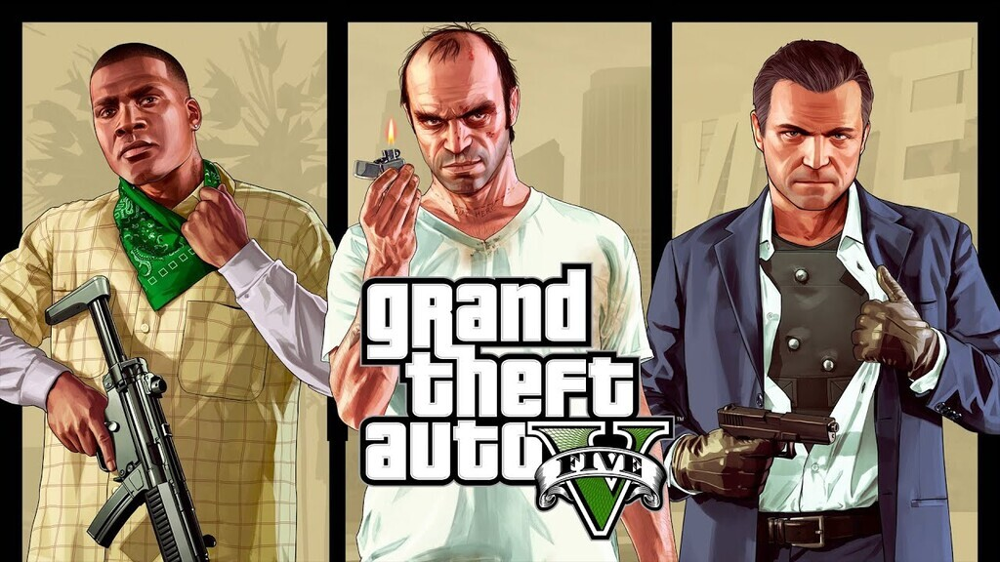

Grand Theft Auto V
Grand Theft Auto V (abreviado como GTA V o GTA 5) es un videojuego de acción-aventura de mundo abierto desarrollado por el estudio Rockstar North y distribuido por Rockstar Games.
Fue lanzado el 17 de septiembre de 2013 para las consolas PlayStation 3 y Xbox 360. Posteriormente, distribuido el 18 de noviembre de 2014 para las consolas de nueva generación PlayStation 4 y Xbox One
y la vista en primera persona, luego para Microsoft Windows el 14 de abril de 2015 y finalmente se confirmó su lanzamiento para PlayStation 5 y Xbox Series X/S para marzo de 2022. Entre las novedades
se encuentra la mejora de gráficos (8k) incluido el soporte de 120 FPS. Se trató del primer gran título en la serie Grand Theft Auto desde el lanzamiento de Grand Theft Auto IV en 2008, el cual estrenó
la «era HD» de la mencionada serie de videojuegos.
La primera información fue revelada por Rockstar Games el 25 de octubre de 2011 en la red social Twitter. El juego está ambientado en la ciudad ficticia de Los Santos, así como en las zonas que la rodean,
basada en la ciudad de Los Ángeles y el sur de California. La ciudad también era la ambientación del anterior juego GTA:San Andreas. Por primera vez el juego se centraría en tres personajes distintos en
vez de uno solo: Michael, Trevor y Franklin, además del personaje que el jugador utiliza en el modo en línea. El tráiler de estreno de Grand Theft Auto V se dio a conocer el 2 de noviembre de 2011.
Es uno de los juegos más caros de la historia, con un gasto de 265 millones de dólares, superando a su antecesor GTA IV —100 millones. Grand Theft Auto V recaudó 800 millones de dólares en las primeras 24 horas
de su estreno, lo que lo convirtió en el videojuego que más dinero había recaudado en menos tiempo de toda la historia; y había recaudado en 3 días un monto récord de 1000 millones de dólares en ventas.

Historia del juego
En el año 2004, Michael Townley, Trevor Philips y Brad Snider eran ladrones de bancos que vivían en Ludendorff, en el estado de North Yankton (basado en Dakota del Norte). Michael, queriendo huir de esa vida entonces,
planea un atraco falso junto al agente federal corrupto Dave Norton (Dave tenía que matar a Trevor y arrestar a Brad mientras Michael fingía su muerte). Pero todo sale mal porque Dave en vez de dispararle a Trevor,
dispara a Brad y Trevor escapa. Michael es dado por muerto y es llevado con su familia a Los Santos (San Andreas) con una nueva identidad: «Michael De Santa».
Nueve años después (año 2013), a Franklin Clinton, que trabaja como embargador de vehículos en un concesionario de coches, junto con su amigo Lamar Davis, se le pide recuperar un vehículo perteneciente al hijo de Michael,
Jimmy, quien está atrasado en el pago de su adquisición. Deduciendo que su hijo está punto de convertirse en una víctima de un fraude de crédito, Michael se esconde en el vehículo y se enfrenta a Franklin.
Cuando este conduce de camino al concesionario, lo obliga a estrellar el coche contra la vidriera del local. Clinton es despedido, pero él y De Santa se convierten en amigos.
Posteriormente, cuando Michael descubre a su esposa Amanda en la cama con su entrenador de tenis Kyle Chavis, él y Franklin lo persiguen hasta una mansión, la cual Michael destruye con furia. Para su mala suerte,
la propiedad pertenece a Natalia Zverovna, la amante del narcotraficante mexicano Martín Madrazo, mujer que resultaba ser alumna del susodicho entrenador. Iracundo, Madrazo localiza a De Santa y le exige una indemnización.
Ellos acceden a pagar su deuda mediante el dinero obtenido de un robo a una sucursal de la cadena de joyerías Vangelico. Trevor Philips, el otro superviviente del robo en Ludendorff, se entera del atraco viendo la
televisión. En ese momento se da cuenta de que el autor no podía ser otro que el propio Townley, al reconocerle por una frase que dijo el día del robo inicial. Ahí es cuando irrumpe en la vida de su excompañero,
luego de haberle seguido la pista a Los Santos.
Mientras tanto, la vida personal de los protagonistas comienza a salirse de control. La inesperada reaparición de Trevor desencadena un comportamiento imprudente y errático en Michael Townley, lo que impulsa a su familia
a irse de casa. Asimismo, los intentos de Michael por hacer algo en la vida lo llevan con Devin Weston, un multimillonario capitalista de riesgo e incursionista corporativo, quien desarrolla un resentimiento contra él luego
de la muerte accidental de la secretaria de Devin, Molly Schultz. Franklin se ve perturbado por la forma en que Lamar cae bajo la influencia de Harold «Stretch» Joseph, un gánster que desertó a la banda de los Families durante
su estancia en prisión, pasándose al enemigo (los Ballas) y repetidamente intenta matar a Lamar para probarse a sí mismo ante sus nuevos aliados. Por su parte, Trevor hace sus esfuerzos para consolidar su poder y control sobre
el mercado de la metanfetamina en el condado de Blaine, tras haberse revelado contra la banda de motociclistas The Lost, los mexicanos Varrios Los Aztecas, los salvadoreños La Marabunta Grande, traficantes de metanfetamina
locales, mercenarios contratados por el gobierno y contra una tríada liderada por Wei Cheng, una de las figuras más importantes en el mundo del hampa chino.
A medida que avanza la trama, Michael se ve obligado por Dave y su compañero del FIB Steve Haines, a realizar una serie de operaciones con Clinton y Philips con el objetivo de socavar una agencia rival, la IAA. Bajo órdenes de
Haines, el trío ataca el edificio de la IAA, roban un camión blindado con fondos destinados a la IAA y asaltan un banco que contiene la nómina de todos los policías corruptos y funcionarios públicos de Los Santos. Sin embargo,
durante esto Michael y Trevor se ven obligados a esconderse temporalmente en el condado Blaine luego de que Philips secuestrase a la mujer de Madrazo tras no recibir una compensación por realizar un trabajo para este. Puesto
que Steve está bajo creciente investigación por sus métodos, fuerza al grupo a entrar en la sede del FIB y borrar cualquier evidencia de sus servidores que pueda ser utilizada contra él. Michael tiene la oportunidad de borrar
todos los datos de sus propias actividades en el proceso, destruyendo todo el chantaje de Haines sobre él. Después de convencer a Trevor para devolver a la esposa de Madrazo, comienzan a hacer planes para el mayor golpe que
jamás puedan imaginar: asaltar la reserva de lingotes de oro de Union Depository.
Después de volver a Los Santos, Michael hace las paces con su familia y vuelven a vivir juntos. Sin embargo, Trevor descubre que Brad, el otro cómplice del atraco de Ludendorff, fue asesinado y no está en prisión como se le
hizo creer. En su lugar, fue sepultado en la tumba destinada para Michael. Philips se siente traicionado por Michael, hecho que causa fricción dentro del grupo y amenaza con destruir sus planes para el robo a Union Depository.
Posteriormente, cuando De Santa y Norton se ven envueltos en un enfrentamiento múltiple en el que se implican el FIB, la IAA y la empresa de seguridad privada Merryweather, Trevor acude en su ayuda, expresando que solo él tiene
el derecho de matar a Michael. A pesar de no perdonarlo, Philips indica que solamente se separará del grupo luego de llevar a cabo el atraco a Union Depository.
El golpe es un éxito, pero Franklin es presionado por Haines y Weston para asesinar a Trevor y Michael, respectivamente. Clinton tiene tres opciones: matar a Trevor, a Michael o permitirles vivir pero arriesgar su vida y enfrentar
a sus enemigos. En caso de que Franklin asesine a cualquiera de los dos, este regresa a su antigua vida y cesa el contacto con el sobreviviente. Alternativamente, si no mata a ninguno, el trío une fuerzas para resistir una
embestida del FIB y Merryweather para luego asesinar a Stretch, Wei Cheng, Steve Haines y Devin Weston. Con todos sus enemigos eliminados, los tres quedan de acuerdo en dejar de trabajar juntos, pero seguir con la amistad.